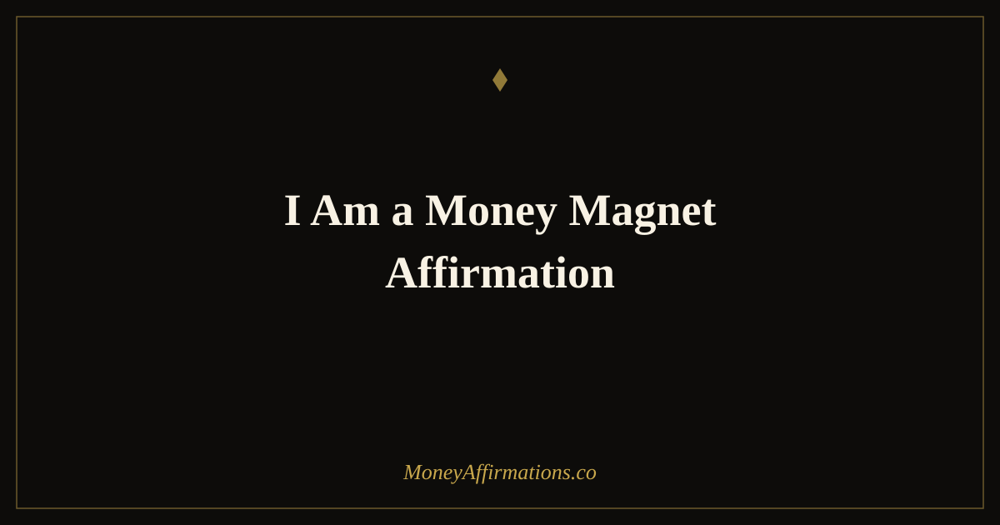

I Am a Money Magnet Affirmation: 40 Statements to Attract Wealth

"I am a money magnet" is one of the most widely used money affirmations in the world — and for good reason. The statement works on multiple psychological levels simultaneously. It uses the most powerful words in any self-belief statement: "I am." It frames your relationship with money as active rather than passive — you attract, rather than wait or wish. And it positions wealth as something that moves toward you as a natural consequence of who you are, rather than as a lucky accident or the reward of exhausting effort.
These 40 I am a money magnet affirmations expand on the core statement in every direction: receiving, worthiness, flow, identity, action, and abundance. Whether you are new to affirmation practice or deepening a long-standing one, this collection provides the full range of statements needed to build and reinforce the money magnet identity at its most powerful. For a broader collection that covers the wider landscape of money magnetism, explore the full I am a money magnet resource.
What is the I am a money magnet affirmation?
"I am a money magnet" is a present-tense identity affirmation that aligns your self-concept with the experience of drawing financial abundance toward you. Unlike goal statements ("I want to earn more") or gratitude statements ("I am thankful for money"), it is an identity declaration — a statement about who you are, not what you want or what you have. Identity statements are the most neurologically powerful category of self-belief, because they shape automatic behaviour rather than just conscious intention.
Used consistently, this affirmation and its variations gradually replace the financial self-concept that most people carry without realising it — one of scarcity, unworthiness, or passive hoping — with one of active, expectant, open-handed abundance. The behavioural results of this shift are concrete and measurable over time. Explore the full money affirmations collection for the complete toolkit that supports this identity.
40 I am a money magnet affirmations
- I am a money magnet and wealth is drawn to me naturally and consistently.
- I am a money magnet — money finds me wherever I go and in everything I do.
- I am a money magnet and I receive financial abundance from expected and unexpected sources.
- I am a money magnet because I believe deeply in my worth and my capacity to receive.
- I am a money magnet — opportunities, income, and wealth flow toward me with ease.
- I am a money magnet and I hold that identity firmly regardless of what my bank balance shows today.
- I am a money magnet — my mindset, my actions, and my energy all attract financial abundance.
- I am a money magnet who receives generously and manages wisely.
- I am a money magnet and every day I become more magnetic to wealth and opportunity.
- I am a money magnet — money is comfortable with me and grows easily in my hands.
- I am a money magnet because I show up with value and I am willing to be compensated for it.
- I am a money magnet and financial blessings arrive in my life in forms I recognise and receive.
- I am a money magnet who earns well, saves consistently, and invests with purpose.
- I am a money magnet and the universe supports my financial success in every way.
- I am a money magnet — the more I give, the more I receive, in an endless and generous cycle.
- I am a money magnet because I have released every old story about money being hard to attract.
- I am a money magnet and I hold an open, grateful, expectant relationship with financial abundance.
- I am a money magnet — my income increases because I believe I deserve more and I ask for it.
- I am a money magnet who attracts the right clients, the right deals, and the right opportunities.
- I am a money magnet and I wake each morning knowing that today brings new financial possibility.
- I am a money magnet — wealth does not escape me, it seeks me.
- I am a money magnet because I think abundantly, act confidently, and receive without guilt.
- I am a money magnet and I notice and act on every financial opportunity placed in my path.
- I am a money magnet — my bank balance is a reflection of the abundant identity I carry every day.
- I am a money magnet who grows wealthier with every mindful financial decision I make.
- I am a money magnet and money loves to stay with me because I honour and invest it well.
- I am a money magnet — there is more than enough wealth in this world and my share flows to me.
- I am a money magnet because I have decided that financial abundance is my natural state.
- I am a money magnet and I release every fear, every doubt, and every block that ever dimmed my financial energy.
- I am a money magnet — I attract wealth not despite who I am but precisely because of who I am.
- I am a money magnet and I use my wealth to create a life of freedom, purpose, and joy.
- I am a money magnet who earns more each year as my belief in my own value deepens.
- I am a money magnet and my energy is one of abundance, generosity, and open-handed receiving.
- I am a money magnet — I am seen, valued, and compensated generously for the contribution I make.
- I am a money magnet and financial success comes to me because I prepare for it and welcome it.
- I am a money magnet — my thoughts, my words, and my actions all pull wealth toward me.
- I am a money magnet who builds lasting wealth for myself and the people I love.
- I am a money magnet and I carry this identity into every room, every meeting, and every opportunity.
- I am a money magnet — abundance is not something I pursue, it is something I embody.
- I am a money magnet, today, tomorrow, and in every version of my life still to come.
How to use these affirmations
The core "I am a money magnet" affirmation is most powerful when it becomes a natural, automatic thought — something that surfaces without effort throughout your day. To reach that point, begin with a deliberate morning practice: choose five affirmations from this list, sit quietly, and speak each one aloud three times with full presence. Do this for 30 days without interruption and observe what changes — not just in how you feel about money, but in how you behave around it.
Beyond the morning practice, use single affirmations as what psychologists call self-instructional cues: a statement you say to yourself before any financial interaction that would normally bring up anxiety or self-doubt. Before a salary conversation: "I am a money magnet who earns what I am worth." Before sending an invoice: "I am a money magnet who receives payment easily and without guilt." Before checking your finances: "I am a money magnet and my financial reality is improving." These targeted applications are where the money magnet identity most directly influences the outcomes that matter.
The psychology behind the money magnet identity
The "I am" formulation is not arbitrary — it is the most neurologically potent structure for belief formation. Research in identity-based motivation shows that people behave in ways consistent with their stated identities far more reliably than they behave in ways consistent with their stated goals. "I am a saver" produces more consistent saving behaviour than "I want to save money." "I am a money magnet" produces more consistent wealth-attracting behaviour than "I hope to attract more money."
The mechanism is self-verification: human beings are strongly motivated to behave consistently with how they see themselves. When you repeatedly tell yourself "I am a money magnet," your brain begins to process financial situations through that lens — noticing opportunities, flagging under-charging, prompting you to ask for more, making the wealth-attracting choice feel like the natural one. This is not wishful thinking operating on an indifferent universe; it is deliberate identity formation operating on your own psychology, which then operates on your behaviour, which then produces changed financial outcomes. The magnet metaphor is apt — it describes what happens when identity and behaviour align fully around financial abundance.
Tips to make them work faster
- Say "I am a money magnet" on waking, before sleeping, and before any financial interaction. The repetition of the identity at these specific neurologically receptive moments accelerates the rewiring.
- Write it ten times each morning for 30 days. The combination of writing and speaking activates more neural pathways than either alone. The 30-day commitment produces a measurable shift in automatic thought.
- Pair it with a physical gesture. Placing a hand on your heart while speaking the affirmation adds a somatic anchor that deepens the neurological encoding.
- Track every financial win, however small. A new client, a raise, unexpected money, a bill you paid off — all of these are evidence of your magnetism. Documenting them strengthens the identity.
- Replace negative money thoughts with the affirmation immediately. Every time a scarcity thought surfaces, respond: "I am a money magnet and abundance is my natural state." Consistency in this practice is transformative over 60 to 90 days.
Frequently Asked Questions
What does it mean to be a money magnet?
Being a money magnet is a state of internal alignment in which your beliefs, actions, and identity are all oriented toward financial abundance rather than scarcity. Practically speaking, it means you notice and act on financial opportunities others miss, you ask for what your work is worth, you invest consistently, and you carry a genuine openness to receiving money from expected and unexpected sources. The magnetism is not supernatural — it is the compounding result of a self-concept that expects wealth, and the behaviours that follow from that expectation.
Why is "I am a money magnet" one of the most powerful money affirmations?
It works because it combines an identity statement ('I am') with an active relationship to money ('a magnet') rather than a passive one ('I have money' or 'money comes to me'). The magnetism framing implies that you actively draw wealth — not by luck or chance but by the quality of your energy, attention, and action. It positions you as the source of the attraction rather than the recipient of fortune, which is psychologically more empowering and more accurate. Repeated consistently, it rewires the self-concept from financial passivity to financial agency.
How long should I say this affirmation each day?
Five to ten minutes of deliberate affirmation practice each morning produces significant results within two to four weeks. You do not need to spend the entire time on a single statement — rotate through five to ten affirmations from this list, spending a moment with each. The key variables are consistency, spoken delivery, and genuine presence with the words. Saying 'I am a money magnet' quietly while scrolling your phone is a fraction as effective as saying it aloud, eyes closed, with your full attention and genuine belief.
You are a money magnet — and the full money affirmations collection has everything you need to build and sustain the identity and the practice that makes that statement your lived financial reality.